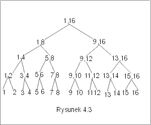

| « poprzedni punkt | nastêpny punkt » |
Algorytm sortowania, który zamierzamy omówiæ w tym punkcie jest algorytmem rekurencyjnym, wykorzystuj±cym zasadê "dziel i zwyciê¿aj", tak jak to by³o w przypadku algorytmu QuickSort. Teraz jednak nasze postêpowanie bêdzie zupe³nie inne. Zamiast operacji rozdzielania ci±gu, stosujemy operacjê scalania ju¿ uporz±dkowanych fragmentów ci±gu. Omawiany algorytm nosi nazwê MergeSort.
Idea algorytmu sortowania przez scalanie
Z przedstawionej idei algorytmu wynika, ¿e etap pocz±tkowy polega na kolejnych podzia³ach ci±gu na czê¶ci. Na tym etapie nie wykonujemy ¿adnych porównañ, ani zmian w ci±gu danych. Dopiero, gdy dojdziemy do ci±gów jednoelementowych, mo¿emy zacz±æ scalanie.
Przyk³ad 5.1
Rozwa¿my ci±g 5,7,4,9,3,6,2,1. Potraktujmy, ka¿dy z elementów tego ci±gu jako jednoelementowy uporz±dkowany ci±g. Zastosujemy procedurê scalania do s±siaduj±cych ci±gów, otrzymuj±c 4 dwuelementowe posortowane ci±gi: {5,7}, {4,9}, {3,6}, {1,2}. Teraz ponownie zastosujemy scalanie s±siednich ci±gów tworz±c dwa czteroelementowe segmenty uporz±dkowane {4,5,7,9}, {1,2,3,6}. Wykonanie jeszcze jednego scalania pozwoli nam utworzyæ ci±g uporz±dkowany {1, 2, 3, 4, 5, 6, 7, 9}.J
Na rysunku 4.2 przedstawiono graf rekurencyjnych wywo³añ funkcji MergeSort.
Operacja, któr± wykonywaæ bêdziemy wielokrotnie w omawianym algorytmie sortowania, to scalanie. Poniewa¿ scalanie dotyczy tu s±siaduj±cych fragmentów jednego ci±gu, a wynik scalania powinien byæ te¿ zapisany w tym samym ci±gu, zmodyfikujemy nieco algorytm Merge przedstawiony w poprzednim punkcie.
Niech Scal(l,x,p) bêdzie procedur±, która realizuje scalanie dwóch odcinków danego ci±gu e, wyznaczonych przez indeksy l, x, oraz x+1, p. Oczywi¶cie zak³adamy, ¿e l £ x £ p. W pierwszym kroku algorytmu przepiszemy elementy e[l],...,e[x] oraz e[x+1],...,e[p] do dwóch tablic pomocniczych a i b. Nastêpnie powtórzymy postêpowanie z algorytmu Merge zapisuj±c ci±g wyj¶ciowy na pozycjach e[l],...,e[p]. Procedura scalania przyjmie teraz postaæ.
|
Scal |
(l,x,p: :int ) |
|
{ |
n := x-l+1; m := p-x; |
|
for i := 1 to n do a[i] := e[l+i-1] od; |
|
|
for i := 1 to m do b[i] := e[x+i] od; |
|
|
a[n+1] := + ¥; b[m+1]:= + ¥; |
|
|
i := 1; j := 1; k := l; |
|
|
while (k £ p) do |
|
|
|
if (a[i] £ b[j]) then |
|
e[k] := a[i]; i := i+1 |
|
|
|
else |
|
|
e[k] := b[j]; j := j+1 |
|
fi; |
|
|
|
k := k+1 |
|
od; |
|
|
} |
Korzystaj±c z analizy poprawno¶ci algorytmu Merge, mo¿emy udowodniæ nastêpuj±ce twierdzenie.
Twierdzenie 5.1 Je¿eli {e[l]£ ...£ e[x], e[x+1]£ ...£ e[p] oraz e[i] = ei dla i= l,...,p}, to po wykonaniu procedury Scal(l,x,p) w dowolnej strukturze danych z porz±dkiem liniowym, spe³niony jest warunek
e[l]£ ...£ e[p] oraz ci±g e[l],...,e[p] jest permutacj± elementów ci±gu el ,..., ep.
Algorytm
Algorytm sortowania przez scalanie mo¿na zapisaæ bardzo elegancko jako rekurencyjn± procedurê MergeSort o dwóch parametrach l, p, bêd±cych indeksami lewego i prawego koñca rozwa¿anej czê¶ci ci±gu. Oczywi¶cie w celu posortowania tablicy e[1],...,e[n] nale¿y wywo³aæ tê procedurê z parametrami 1, n.
| MergeSort (l, p : int){ | |||
| if (l < p) | |||
| x :=(l+p) div 2; | // l £ x £ p | ||
| MergeSort(l, x); | // e[l] £ ...£ e[x-1] £ e[x] | ||
| MergeSort(x+1, p); | // e[x+1] £ ... £ e[p-1] £ e[p] | ||
| Scal(l, x, p); | // e[1] £...£ e[x] £e[x+1] £ ... £ e[p-1] £ e[p] | ||
| fi; | |||
| } | |||
Przyk³ad 5.2
Przyjrzyjmy siê dok³adniej, jak wygl±da proces dzielenia ci±gu na fragmenty i jak te fragmenty s± nastêpnie scalane w kolejnych etapach algorytmu. W poni¿szej tabeli zaznaczono tylko numery pozycji rozdzielanych i nastêpnie scalanych dla ci±gu o szesnastu elementach.
| 1,2,3,4,5,6,7,8,9,10,11,12,13,14,15,16 | |||||||||||||||
| 1,2,3,4,5,6,7,8 | 9,10,11,12,13,14,15,16 | ||||||||||||||
| 1,2,3,4 | 5,6,7,8 | 9,10,11,12 | 13,14,15,16 | ||||||||||||
| 1,2 | 3,4 | 5,6 | 7,8 | 9,10 | 11,12 | 13,14 | 15,16 | ||||||||
| 1 | 2 | 3 | 4 | 5 | 6 | 7 | 8 | 9 | 10 | 11 | 12 | 13 | 14 | 15 | 16 |
| 1,2 | 3,4 | 5,6 | 7,8 | 9,10 | 11,12 | 13,14 | 15,16 | ||||||||
| 1,2,3,4 | 5,6,7,8 | 9,10,11,12 | 13,14,15,16 | ||||||||||||
| 1,2,3,4,5,6,7,8 | 9,10,11,12,13,14,15,16 | ||||||||||||||
| 1,2,3,4,5,6,7,8,9,10,11,12,13,14,15,16 | |||||||||||||||
Na rysunku 4.3 przedstawiono drzewo rekurencyjnych wywo³añ procedury MergeSort dla n=16. Id±c w dó³ tego drzewa dokonujemy podzia³u ka¿dego zadania na dwa podzadania. Nastêpnie wracaj±c, scalamy odpowiadaj±ce fragmenty ci±gu.

Poprawno¶æ algorytmu:
Dowód poprawno¶ci algorytmu przeprowadzimy przez indukcjê ze wzglêdu na d³ugo¶æ sortowanego ci±gu. Je¿eli l = p to ci±g zawiera tylko jeden element i jest uporz±dkowany. Procedura MergeSort nie wykona w tym przypadku ¿adnych porównañ. Rozwa¿my wykonanie algorytmu MergeSort dla ci±gu e[l],... ,e[p], gdzie l< p i za³ó¿my, ¿e procedura MergeSort sortuje poprawnie dowolny ci±g o d³ugo¶ci mniejszej. Skoro l < p, to zostanie wykonana instrukcja warunkowa, bêd±ca tre¶ci± procedury MergeSort. Poniewa¿ x = (l+p) div 2, wiêc (x - l) < (p - l) oraz p-(x+1) < (p - l). Oba ci±gi e[l], ..., e[x] oraz e[x+1], ..., e[p] s± krótsze od ci±gu e[l],... ,e[p]. Na mocy za³o¿enia indukcyjnego, po wykonaniu instrukcji "MergeSort(l,x);" otrzymamy
e[l] £ ...£ e[x-1] £ e[x],
a po wykonaniu "MergeSort(x+1,p);"
e[x+1] £ ... £ e[p-1] £ e[p].
Na mocy twierdzenia o poprawno¶ci procedury Scal, po wykonaniu instrukcji "Scal(l,x,p)" ca³y rozwa¿any ci±g jest posortowany:
e[l] £...£ e[x] £e[x+1] £ ... £ e[p-1] £ e[p].
Wynika st±d, ¿e dla dowolnego ci±gu algorytm wykonuje poprawnie zadanie sortowania.
Twierdzenie 5.2 Algorytm MergeSort jest ca³kowicie poprawnym rozwi±zaniem problemu sortowania, w ka¿dej strukturze danych z liniowym porz±dkiem £.
Koszt algorytmu:
Niech T(n) bêdzie liczb± porównañ wykonanych przez algorytm MergeSort dla ci±gu o n elementach. Za³ó¿my dla wygody, ¿e n jest potêg± dwójki, np. n= 2k. Poniewa¿ scalenie dwóch ci±gów o d³ugo¶ci n/2 wymaga n porównañ, zatem mamy nastêpuj±ce równanie rekurencyjne, opisuj±ce koszt algorytmu MergeSort
T(1) = 0, T(2k) = 2 T(2 k-1) + n.
Rozwi±zaniem tego równania jest funkcja T(n) = Q(n lg n). Koszt algorytmu MergeSort mierzony liczb± wykonanych porównañ elementów ci±gu jest liniowo-logarytmiczny ze wzglêdu na rozmiar danych. Bardziej wnikliwa analiza scalania pokazuje, ¿e algorytm MergeSort wymaga Q(n lg n) porównañ, zarówno w przypadku najlepszym, jak i w przypadku pesymistycznym.
Uwaga.
1. Algorytm MergeSort nadaje siê doskonale do zrównoleglenia: wywo³ania rekurencyjne mog±
byæ przecie¿ realizowane przez dwa ró¿ne procesory.
2. Przygl±daj±c siê bli¿ej algorytmowi MergeSort dojdziemy do wniosku, ¿e
etapy algorytmu zwi±zane z dzieleniem zadania na podzadania mo¿emy pomin±æ.
Mo¿emy zacz±æ od razu od scalania, ³±cz±c najpierw elementy w pary
uporz±dkowane, potem w czwórki itd. Taka realizacja algorytmu nie wymaga
u¿ycia rekursji. Niestety struktura algorytmu jest wtedy bardziej skomplikowana.
Dok³adne zapisanie tego algorytmu pozostawiamy Czytelnikowi jako
æwiczenie.
Pytanie 5: Ile razy zostanie wykonana instrukcja "x:= (l+p)/2", je¿eli algorytm MergeSort zastosowano do ci±gu n elementowego, a n jest potêg± dwójki?
| « poprzedni punkt | nastêpny punkt » |